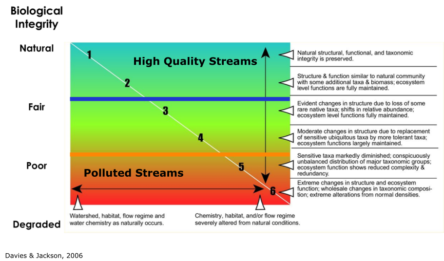
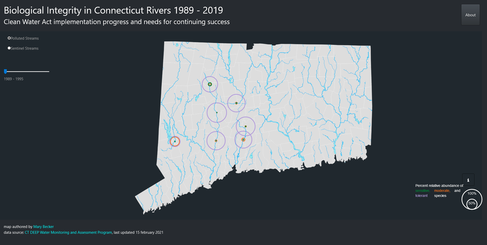
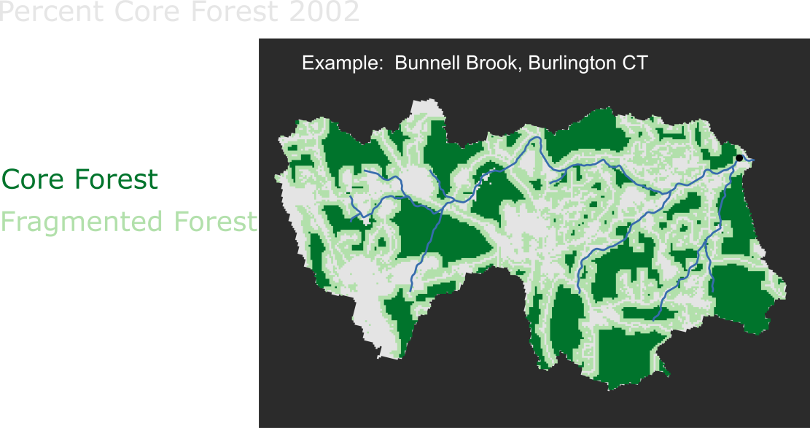
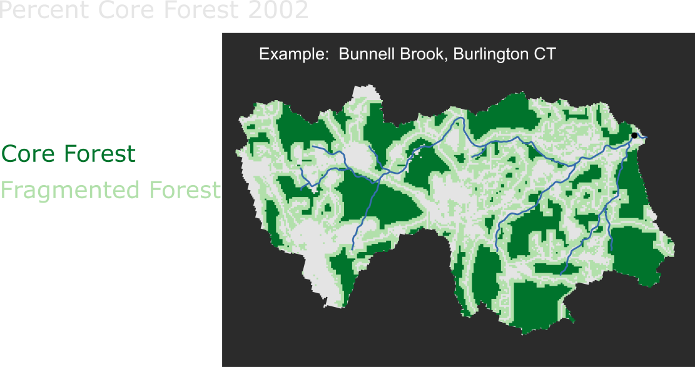
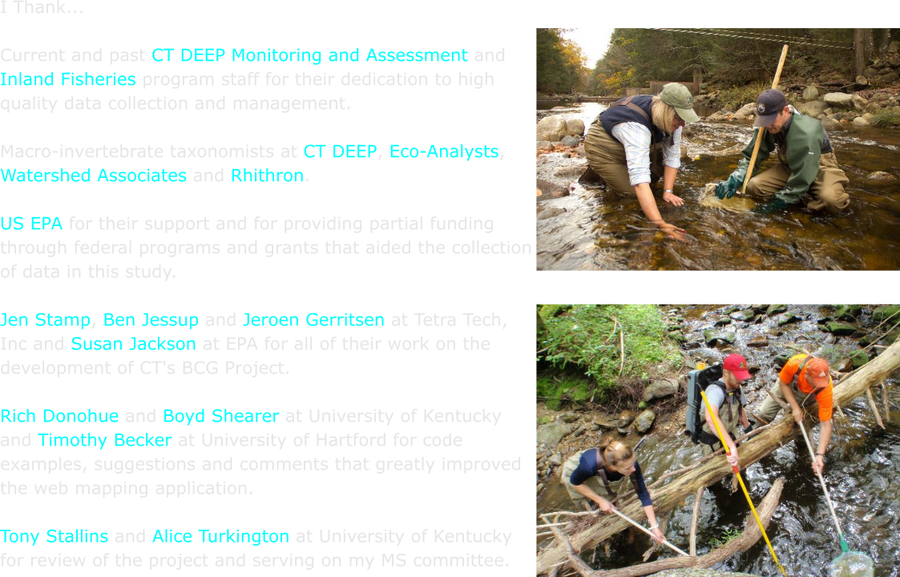
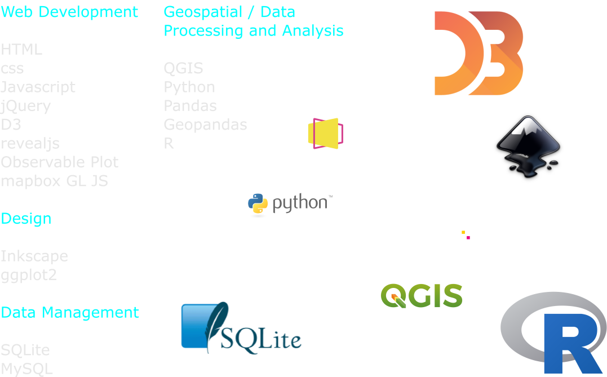

Enhancing U.S. Clean Water Act Implementation
A Framework to Inform High Quality Stream Protection
Mary Becker
 Geography Department Digital Mapping Program &
Geography Department Digital Mapping Program &
 Monitoring and Assessment Program
Monitoring and Assessment Program
MS Project Defense - November. 29, 2022

Willimantic River, Stafford CT 1960s (left) and 2000s (right)

Sandy Brook, Colebrook CT






 


Characterize Temporally and Spatially Specific Drainage Basin Environments Across BCG Levels Bio Samples




Mary Becker - mary.becker@ct.gov
 Geography Department Digital Mapping Program &
Geography Department Digital Mapping Program &
 Monitoring and Assessment Program
Monitoring and Assessment Program